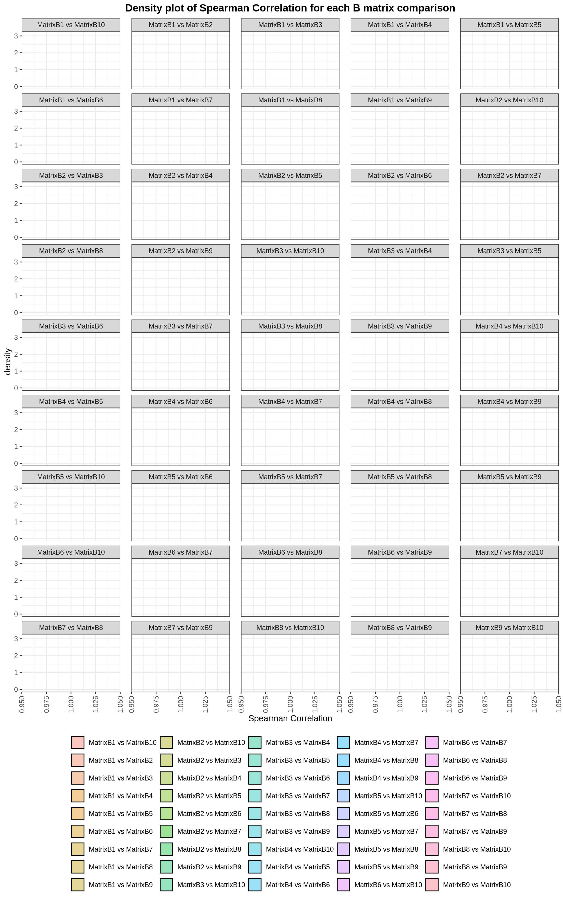

Code
INPUT_PLIER_ROB_DIR=NULLMarc Subirana-Granés (2024)
Compare the various parameters of PLIER GTEx models across different computations to evaluate PLIER’s robustness, utilizing identical parameters for assessment.
suppressPackageStartupMessages({
library(dplyr)
library(tidyr)
library(UpSetR)
library(ggplot2)
library(ComplexHeatmap)
library(reshape2)
library(corrr)
library(assertthat)
})
#load functions
source(here::here('scripts/plier_util.R'))
# move functions to a Rscript?
check_all_equal_in_list <- function(lst) {
# Check if all values in the list are equal
all_equal <- all(sapply(lst, function(x) identical(x, lst[[1]])))
# Print message based on the result
if (all_equal) {
print("All values in the list are equal.")
} else {
print("Values in the list are not all equal.")
}
}
assert_that(!is.null(INPUT_PLIER_ROB_DIR), msg = "Input robustness PLIER models path was not specified")
INPUT_PLIER_ROB_DIR=here::here(INPUT_PLIER_ROB_DIR)Extract all the parameters in the PLIER module for each GTEx module and create a list for each parameter and load models into a list object.
gtex_rob_model_paths=list.files(INPUT_PLIER_ROB_DIR,
pattern="\\.rds",
full.names=TRUE)
parameters_to_keep <- c("L1", "L2", "L3", "B", "C", "heldOutGen", "residual", "summary", "U", "Uauc", "Z", "Up", "withPrior")
# Initialize a list to store the extracted values for each parameter, considering their data types
extracted_values <- setNames(lapply(parameters_to_keep, function(x) list()), parameters_to_keep)
# Function to handle different types of data structures
handle_data_type <- function(data, param) {
# Depending on the specific requirements or handling you need for each type, adjust here
return(data[[param]])
}
# Read each file once and extract all specified parameters, handling them based on their type
all_models_data <- lapply(gtex_rob_model_paths, function(file_path) {
plier_model <- readRDS(file_path)
# Extract and handle each needed parameter for this model
needed_params <- sapply(parameters_to_keep, function(param) handle_data_type(plier_model, param), simplify = FALSE)
names(needed_params) <- parameters_to_keep
return(needed_params)
})
# Organize the extracted data by parameter
for(param in parameters_to_keep) {
extracted_values[[param]] <- lapply(all_models_data, function(model_data) model_data[[param]])
}
gtex_rob_model_paths=list.files(INPUT_PLIER_ROB_DIR,
pattern="\\.rds",
full.names=TRUE)
# All models into a list
gtex_rob_models=lapply(gtex_rob_model_paths, readRDS)Are the L1, L2 and L3 parameters identical along the different GTEx models run?
L1
[1] "All values in the list are equal."L2
[1] "All values in the list are equal."L3
[1] "All values in the list are equal."How similar are the Z matrices along the different models?
To study how similar are the Z matrices we will calcuate:
We expected a low MASE and a high rho (arround 1) if the models are similar.
We also expect a inverse correlation between MASE and Spearman Correlation.
Do the present the same number of LVs and genes?
results_mase <- data.frame()
# Compute MASE for each combination
for (i in 1:(length(matricesZ) - 1)) {
for (j in (i + 1):length(matricesZ)) {
mase_value <- GetReconstructionMASE(matricesZ[[i]], matricesZ[[j]])
comparison_name <- paste("MatrixZ", i, " vs MatrixZ", j, sep = "")
tmp_df=data.frame(comparison=comparison_name, mase=mase_value)
results_mase <- rbind(results_mase, data.frame(comparison = comparison_name, mase = mase_value))
}
}
# Convert mase to a numeric vector to ensure proper plotting
results_mase$mase <- as.numeric(results_mase$mase)
options(repr.plot.width = 10, repr.plot.height = 16, repr.plot.res = 250)
ggplot(results_mase, aes(x = mase, fill = comparison)) +
geom_density(alpha = 0.4) +
theme_bw() +
labs(x = "MASE",
title = "Density plot of MASE for each Z matrix comparison") +
theme(plot.title = element_text(hjust = 0.5, face = "bold"),
legend.title = element_blank(),
legend.position = 'bottom',
axis.text.x = element_text(angle = 90, vjust = 0.5, hjust = 1),
panel.spacing.x = unit(1, "lines")) +
facet_wrap(~ comparison, ncol = 5)# Initialize a data frame to store results
results_cor <- data.frame(comparison = character(), correlation = numeric(), stringsAsFactors = FALSE)
# Compute Correlation for each combination
for (i in 1:(length(matricesZ) - 1)) {
for (j in (i + 1):length(matricesZ)) {
recon_cor <- GetReconstructionCorrelation(true.mat = matricesZ[[i]], recon.mat = matricesZ[[j]])
comparison_name <- paste("MatrixZ", i, " vs MatrixZ", j, sep = "")
results_cor <- rbind(results_cor, data.frame(comparison = comparison_name, correlation = recon_cor))
}
}
# Convert correlation to a numeric vector to ensure proper plotting
results_cor$correlation <- as.numeric(results_cor$correlation)
options(warn=-1)
options(repr.plot.width = 10, repr.plot.height = 16, repr.plot.res = 250)
ggplot(results_cor, aes(x = correlation, fill = comparison)) +
geom_density(alpha = 0.4) +
theme_bw() +
labs(x = "Spearman Correlation",
title = "Density plot of Spearman Correlation for each Z matrix comparison") +
theme(plot.title = element_text(hjust = 0.5, face = "bold"),
legend.title = element_blank(),
legend.position = 'bottom',
axis.text.x = element_text(angle = 90, vjust = 0.5, hjust = 1),
panel.spacing.x = unit(1, "lines")) +
facet_wrap(~ comparison, ncol = 5)results_combined <- cbind(results_mase, results_cor[c('correlation')])
options(repr.plot.width = 10, repr.plot.height = 16, repr.plot.res = 250)
ggplot(results_combined, aes(x = correlation, y = mase, fill = comparison)) +
geom_density(alpha = 0.4) +
theme_bw() +
labs(x = "Spearman Correlation",
y = "MASE",
title = "Correlation vs. MASE for each Z matrix comparison") +
theme(plot.title = element_text(hjust = 0.5, face = "bold"),
legend.title = element_blank(),
legend.position = 'bottom',
axis.text.x = element_text(angle = 90, vjust = 0.5, hjust = 1),
panel.spacing.x = unit(1, "lines")) +
facet_wrap(~ comparison, ncol = 5)How similar are the B matrices along the different models?
To study how similar are the B matrices we will calcuate:
We expected a low MASE and a high rho (arround 1) if the models are similar.
We also expect a inverse correlation between MASE and Spearman Correlation.
matricesB <- extracted_values$B
results_mase <- data.frame()
# Compute MASE for each combination
for (i in 1:(length(matricesB) - 1)) {
for (j in (i + 1):length(matricesB)) {
mase_value <- GetReconstructionMASE(matricesB[[i]], matricesB[[j]])
comparison_name <- paste("MatrixB", i, " vs MatrixB", j, sep = "")
tmp_df=data.frame(comparison=comparison_name, mase=mase_value)
results_mase <- rbind(results_mase, data.frame(comparison = comparison_name, mase = mase_value))
}
}
# Convert mase to a numeric vector to ensure proper plotting
results_mase$mase <- as.numeric(results_mase$mase)
options(repr.plot.width = 10, repr.plot.height = 16, repr.plot.res = 250)
ggplot(results_mase, aes(x = mase, fill = comparison)) +
geom_density(alpha = 0.4) +
theme_bw() +
labs(x = "MASE",
title = "Density plot of MASE for each B matrix comparison") +
theme(plot.title = element_text(hjust = 0.5, face = "bold"),
legend.title = element_blank(),
legend.position = 'bottom',
axis.text.x = element_text(angle = 90, vjust = 0.5, hjust = 1),
panel.spacing.x = unit(1, "lines")) +
facet_wrap(~ comparison, ncol = 5)ggplot(results_cor, aes(x = correlation, fill = comparison)) +
geom_density(alpha = 0.4) +
theme_bw() +
labs(x = "Spearman Correlation",
title = "Density plot of Spearman Correlation for each B matrix comparison") +
theme(plot.title = element_text(hjust = 0.5, face = "bold"),
legend.title = element_blank(),
legend.position = 'bottom',
axis.text.x = element_text(angle = 90, vjust = 0.5, hjust = 1),
panel.spacing.x = unit(1, "lines")) +
facet_wrap(~ comparison, ncol = 5)# Initialize a data frame to store results
results_cor <- data.frame(comparison = character(), correlation = numeric(), stringsAsFactors = FALSE)
# Compute Correlation for each combination
for (i in 1:(length(matricesB) - 1)) {
for (j in (i + 1):length(matricesB)) {
recon_cor <- GetReconstructionCorrelation(true.mat = matricesB[[i]], recon.mat = matricesB[[j]])
comparison_name <- paste("MatrixB", i, " vs MatrixB", j, sep = "")
results_cor <- rbind(results_cor, data.frame(comparison = comparison_name, correlation = recon_cor))
}
}
# Convert correlation to a numeric vector to ensure proper plotting
results_cor$correlation <- as.numeric(results_cor$correlation)
options(warn=-1)
options(repr.plot.width = 10, repr.plot.height = 16, repr.plot.res = 250)
ggplot(results_cor, aes(x = correlation, fill = comparison)) +
geom_density(alpha = 0.4) +
theme_bw() +
labs(x = "Spearman Correlation",
title = "Density plot of Spearman Correlation for each B matrix comparison") +
theme(plot.title = element_text(hjust = 0.5, face = "bold"),
legend.title = element_blank(),
legend.position = 'bottom',
axis.text.x = element_text(angle = 90, vjust = 0.5, hjust = 1),
panel.spacing.x = unit(1, "lines")) +
facet_wrap(~ comparison, ncol = 5)
results_combined <- cbind(results_mase, results_cor[c('correlation')])
options(repr.plot.width = 10, repr.plot.height = 16, repr.plot.res = 250)
ggplot(results_combined, aes(x = correlation, y = mase, fill = comparison)) +
geom_density(alpha = 0.4) +
theme_bw() +
labs(x = "Spearman Correlation",
y = "MASE",
title = "Correlation vs. MASE for each B matrix comparison") +
theme(plot.title = element_text(hjust = 0.5, face = "bold"),
legend.title = element_blank(),
legend.position = 'bottom',
axis.text.x = element_text(angle = 90, vjust = 0.5, hjust = 1),
panel.spacing.x = unit(1, "lines")) +
facet_wrap(~ comparison, ncol = 5)How similar is the coverage in pathways and LVs assosiated with them?
Pathway: This represents the proportion of “covered” pathways within the analysis. A “covered” pathway refers to a pathway that has been identified.
LV (Latent Variable): This is about the proportion of LVs that have pathways associated with them. The proportion here indicates how many of these LVs have at least one associated pathway, suggesting a linkage or influence between the LVs and the pathways in question.
Sig. Pathway by LV: This metric calculates the number of pathways “covered” divided by the number of LVs. Essentially, it provides a ratio indicating the average number of pathways associated with each LV. A higher ratio suggests that, on average, each LV is associated with multiple pathways, which could indicate a more complex relationship between the LVs and the pathways, or possibly a higher degree of coverage and significance in the analysis.
options(repr.plot.width = 10, repr.plot.height = 10, repr.plot.res = 100)
gtex_rob_models_coverage=lapply(gtex_rob_models, GetPathwayCoverage)
pathways <- numeric(length(gtex_rob_models_coverage))
lvs <- numeric(length(gtex_rob_models_coverage))
sig_pathways_by_lv <- numeric(length(gtex_rob_models_coverage))
# Now we loop over the list and extract the values
for (i in seq_along(gtex_rob_models_coverage)) {
pathways[i] <- gtex_rob_models_coverage[[i]]$pathway
lvs[i] <- gtex_rob_models_coverage[[i]]$lv
sig_pathways_by_lv[i] <- gtex_rob_models_coverage[[i]]$sig.pathway.by.lv
}
gtex_df <- data.frame(
Index = seq_along(gtex_rob_models_coverage),
Pathway = pathways,
LV = lvs,
SigPathwayByLV = sig_pathways_by_lv
)
gtex_melted <- melt(gtex_df, id.vars = 'Index')
ggplot(gtex_melted, aes(x = variable, y = value)) +
geom_boxplot() +
labs(title = "Value Distribution by Group",
x = "Group",
y = "Value") +
theme_minimal() +
theme(
axis.text.x = element_text(size = 20, angle = 90, hjust = 1), # Rotate x-axis labels by 90 degrees
axis.text.y = element_text(size = 25), # Adjust y-axis text size
text = element_text(size = 25) # Adjust other text sizes (plot title, axis labels, etc.)
)